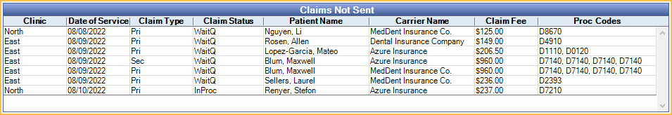

Claims Not Sent Report
Run the Claims Not Sent Report to find claims that still need to be sent to insurance.
In Standard Reports, in the Monthly section, click Claims Not Sent.

The Claims Not Sent report is a list of claims that have been created, but do not have a claim status indicating they have been sent (i.e., Sent-Verified, Probably Sent, or Received).
If a claim is marked as sent (e.g., printed or sent electronically) and the status is later updated to indicate it has not been sent, the claim appears on this report.
Filters
Change report criteria filters to update report results.

From/To: Defaults to one week prior to the current date. To change, type a date or click the dropdown to select a date from the calendar. Click the dropdown arrow again or Refresh to close the calendar.
Clinics: Only available when Clinics are enabled in Show Features. Click to dropdown to select clinics to include in the report. Select All (includes hidden) to include all clinics, including those marked hidden.
- Filters by clinic assigned to the claim.
- If user is restricted to specific clinics, only accessible clinics are listed. When checking All (includes hidden), results include all clinics user has access to, including those marked hidden, and anything unassigned to a clinic; results do not include clinics user is restricted from.
Claim Filter: Select the type of claims to include:
- All: Display all claim types.
- Primary: Display only claims with a Claim Type of Primary.
- Secondary: Display only claims with a Claim Type of Secondary.
- Holding: Display only claims with a status of Hold Until Pri Received or Hold for In Process.
Claims Not Sent
Click Refresh to close the calendar dropdowns and update report results. The Claims Not Sent grid lists each claim meeting the filter criteria.
Right-click a row and select Go to Account to open the Account Module for the selected patient. Double-click a row to open the Claim. Following is a description of each column included in the grid:
Click a column header to re-sort results. By default, results are grouped by Date of Service.
- Clinic: Clinic assigned to the claim.
- Date of Service: Date of Service as listed on the claim.
- Claim Type: Claim Type as listed on the claim
- Pri: Primary claim.
- Sec: Secondary claim.
- Other: Other claim (e.g., medical, tertiary, etc).
- Claim Status: Claim status as listed on the claim.
- WaitQ: Waiting to Send status. These claims are displayed in the Send Claims window.
- Holding: Hold Until Pri Received status. Typically used for Secondary claims.
- InProc: Hold for In Process status. Used for claims with procedures Grouped for Multiple Visits when other procedures in the group are not set complete.
- Unsent: Unsent status. These claims are not displayed in the Send Claims window.
- Patient Name: Last name and first name of patient on claim.
- Carrier Name: Name of Insurance Carrier associated with the claim.
- Claim Fee: Total fee billed to insurance for all procedures on the claim.
- Proc Codes: Procedure codes on the claim.
Report Preview
Click Run Report to launch a print preview of the report results. The print preview includes the same data columns as the Claims Not Sent grid described previously. For a description of toolbar buttons, see Complex Report System.